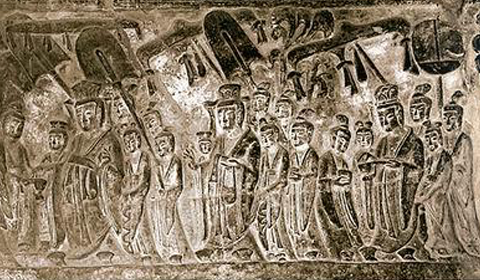
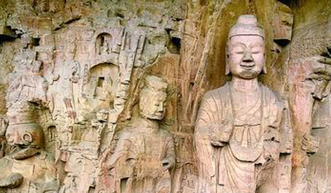
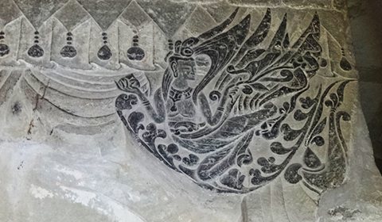
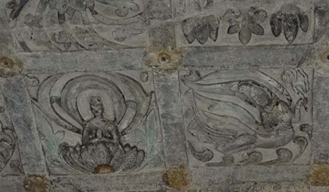
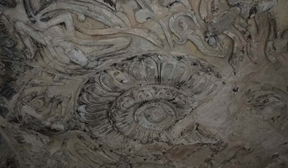

首页
石窟介绍
历史文化
艺术特点
在线服务
关于我们
登录
|
注册

第一石窟
第一石窟为正方形，高、阔各6米。门内两侧雕有“帝后礼佛图”，余三壁雕佛像和佛传故事。于壁角雕神王、怪兽、乐伎等。左侧三幅是皇帝礼佛图，右侧三幅是皇后礼佛图。帝后礼佛图分为。。。。。。

第二石窟
第二窟为一尚未完工的窟穴。东壁有三个佛龛，是北魏初期的作品。龛内雕一佛、二弟子、二菩萨、二力士，座下刻二狮子。中心方柱南面从上到下开凿三个佛龛，最下面的一个较大的为唐代。。。。。。

第三石窟
第三石窟与第二石窟，由其构造判断，殆为同一人之作品，中央方柱之每面作有三尊佛、两罗汉等之佛龛，四面壁上并雕有千体佛像、奏乐天人及供养行列等。。。。。。

第四石窟
第四窟是由东、西二窟组成。东窟有北魏所造之三尊佛，上有唐咸亨元年十月之铭文，其左右并有二佛龛。西窟前面西方之侧壁上亦有大小之三佛龛，其一即刻有唐乾封二年（667）八月之铭文。。。。。。

第五石窟
第五窟突兀在壁面之外，是一平面正方形的小窟，面积最大，窟高3米，四壁边长2米。外壁入口之左右安置金刚力士像。入口东方之侧壁已崩坏，西方则有小佛龛，中央有约三公尺之方柱。。。。。。